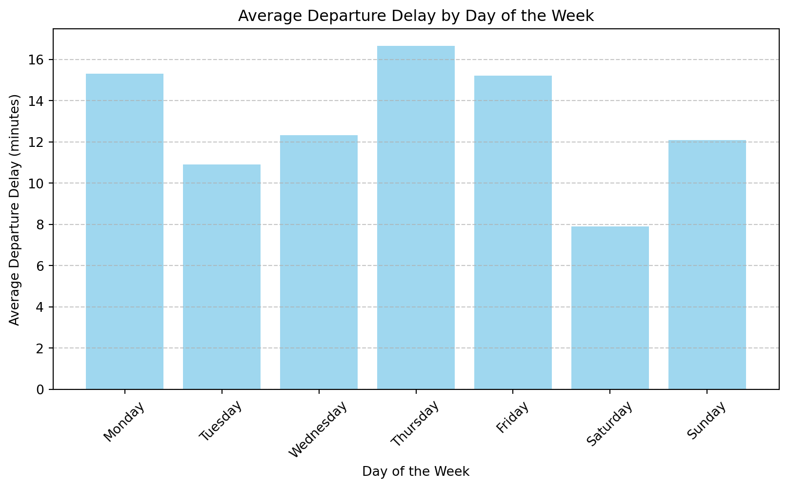
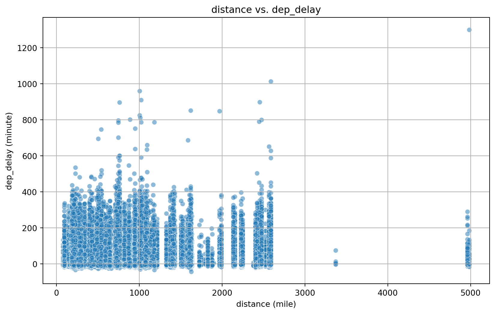
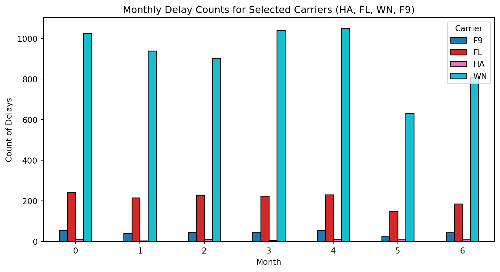

year 0
month 0
day 0
dep_time 8255
sched_dep_time 0
dep_delay 8255
arr_time 8713
sched_arr_time 0
arr_delay 9430
carrier 0
flight 0
tailnum 2512
origin 0
dest 0
air_time 9430
distance 0
hour 0
minute 0
time_hour 0
dtype: int64뉴욕 비행장
데이터 분석
항공사별 지연 데이터 분석
8조 구교빈, 김예원, 김윤희, 남원정
변수명 소개
| 컬럼 명 | 설명 |
|---|---|
| year | 2013년도 |
| month | 월 |
| day | 일 |
| dep_time | 실제 출발 시간 |
| sched_dep_time | 예정된 출발 시간 |
| dep_delay | 출발 지연 시간(분 단위) |
| arr_time | 실제 도착 시간 |
| sched_arr_time | 예정된 도착 시간 |
| arr_delay | 도착 지연 시간(분 단위) |
| carrier | 항공사 코드 |
| flight | 항공편 번호 |
| tailnum | 항공기 등록 번호 |
| origin | 출발 공항 코드 |
| dest | 도착 공항 코드 |
| air_time | 비행 시간(분 단위) |
| distance | 비행 거리(마일 단위) |
| hour | 출발 예정 시간(시간 단위) |
| minute | 출발 예정 시간(분 단위) |
| time_hour | 출발 예정 시간(POSIXct 날짜/시간 형식) |
| 컬럼 명 | 설명 |
|---|---|
| tailnum | 항공기 등록 번호 |
| year | 제작 연도 |
| type | 항공기 종류 |
| manufacturer | 제조사 |
| model | 항공기 모델 |
| engines | 엔진 개수 |
| seats | 좌석 수 |
| speed | 순항 속도 |
| engine | 엔진 타입 |
데이터 전처리
1) 결측치 확인
- flights
- planes
tailnum 0
year 70
type 0
manufacturer 0
model 0
engines 0
seats 0
speed 3299
engine 0
dtype: int642) 결측치 제거
- speed 열 삭제
- dropna로 각 데이터 프레임 결측치 제거year 0
month 0
day 0
dep_time 0
sched_dep_time 0
dep_delay 0
arr_time 0
sched_arr_time 0
arr_delay 0
carrier 0
flight 0
tailnum 0
origin 0
dest 0
air_time 0
distance 0
hour 0
minute 0
time_hour 0
dtype: int64tailnum 0
year 0
type 0
manufacturer 0
model 0
engines 0
seats 0
engine 0
dtype: int643) 병합 / 중복열 삭제/ 변수명 변경
year month day dep_time dep_delay arr_time sched_arr_time arr_delay \
0 2013 1 1 517.0 2.0 830.0 819 11.0
1 2013 1 1 533.0 4.0 850.0 830 20.0
2 2013 1 1 542.0 2.0 923.0 850 33.0
3 2013 1 1 544.0 -1.0 1004.0 1022 -18.0
4 2013 1 1 554.0 -6.0 812.0 837 -25.0
carrier flight ... distance sched_dep_hour sched_dep_minute man_year \
0 UA 1545 ... 1400 5 15 1999.0
1 UA 1714 ... 1416 5 29 1998.0
2 AA 1141 ... 1089 5 40 1990.0
3 B6 725 ... 1576 5 45 2012.0
4 DL 461 ... 762 6 0 1991.0
type manufacturer model engines seats engine
0 Fixed wing multi engine BOEING 737-824 2 149 Turbo-fan
1 Fixed wing multi engine BOEING 737-824 2 149 Turbo-fan
2 Fixed wing multi engine BOEING 757-223 2 178 Turbo-fan
3 Fixed wing multi engine AIRBUS A320-232 2 200 Turbo-fan
4 Fixed wing multi engine BOEING 757-232 2 178 Turbo-fan
[5 rows x 24 columns]4-1) 데이터 현황 분석
- info/describe()
<class 'pandas.core.frame.DataFrame'>
RangeIndex: 273853 entries, 0 to 273852
Data columns (total 24 columns):
# Column Non-Null Count Dtype
--- ------ -------------- -----
0 year 273853 non-null int64
1 month 273853 non-null int64
2 day 273853 non-null int64
3 dep_time 273853 non-null float64
4 dep_delay 273853 non-null float64
5 arr_time 273853 non-null float64
6 sched_arr_time 273853 non-null int64
7 arr_delay 273853 non-null float64
8 carrier 273853 non-null object
9 flight 273853 non-null int64
10 tailnum 273853 non-null object
11 origin 273853 non-null object
12 dest 273853 non-null object
13 air_time 273853 non-null float64
14 distance 273853 non-null int64
15 sched_dep_hour 273853 non-null int64
16 sched_dep_minute 273853 non-null int64
17 man_year 273853 non-null float64
18 type 273853 non-null object
19 manufacturer 273853 non-null object
20 model 273853 non-null object
21 engines 273853 non-null int64
22 seats 273853 non-null int64
23 engine 273853 non-null object
dtypes: float64(6), int64(10), object(8)
memory usage: 50.1+ MB4-2)데이터 현황 분석
| dep_delay | arr_delay | air_time | distance | |
|---|---|---|---|---|
| count | 273853.00 | 273853.00 | 273853.0 | 273853.00 |
| mean | 13.09 | 7.04 | 154.2 | 1077.23 |
| std | 40.41 | 44.93 | 97.2 | 763.96 |
| min | -43.00 | -86.00 | 20.0 | 80.00 |
| 25% | -5.00 | -17.00 | 83.0 | 529.00 |
| 50% | -1.00 | -5.00 | 131.0 | 937.00 |
| 75% | 11.00 | 14.00 | 198.0 | 1416.00 |
| max | 1301.00 | 1272.00 | 695.0 | 4983.00 |
출발 지연 선택 이유
- 출발 지연은 도착 지연의 선행 요인이 될 수 있기에 연쇄 지연을 예방할 수 있다.
- 소비자 입장에서 출발 지연 정도는 항공편 선택에 있어 중요한 기준이 된다.
데이터 후처리
출발 지연이 된 항공편 수 시각화

요일별/월별/항공사별 평균 지연시간 시각화
-요일별

-월별

그래프

비교예시
| 항공사 | 총 비행 횟수 | 지연된 비행 횟수 | 평균 지연 시간(분) | 지연 비율(%) |
|---|---|---|---|---|
| A | 1,500 | 500 | 20 | 33.3% |
| B | 800 | 500 | 20 | 62.5% |
min-max-scaler
- 데이터의 값 범위를 특정 구간(0~1 사이)으로 변환하는 정규화 기법
\[ X_{\text{scaled}} = \frac{X - X_{\text{min}}}{X_{\text{max}} - X_{\text{min}}} \]
본론
가중치 이용
가중치 비중 기준은 3시간
3시간 기준 선정 이유!
- 2024년 4월 미 교통부는 미국 국내선 기준으로 비행 시간 3시간 이상 지연되면 즉시 환불을 요청할 수 있도록 환불 규정을 통일시킴.
3시간 이상기준으로 평균과 비율에7:3,3시간 미만인 경우5:5각각 다르게 가중치를 부여비율과 평균의 범위가 다르기 때문에 동일한 범위를 적용하고자
Min-Max scaler를 적용하여표준화를 진행가중치로 계산된 최종 값으로 항공사별 지연 심각도 비교

분석 내용
가중치를 적용하는 방법
- step 1) 3시간 기준으로 데이터 필터링 진행
- 각 항공사별 전체 지연 횟수와 3시간 이상 지연 횟수.
#| echo: True
### 3시간 이상 지연된 항공사들 데이터 필터링
delay_over_180 = df.loc[df['dep_delay'] >= 180]
# 각 항공사별 전체 지연 횟수
df_count = df['carrier'].value_counts().reset_index()
# 각 항공사별 180분 이상 지연 횟수
delay_over_180_count = delay_over_180['carrier'].value_counts().reset_index()
### 항공사를 중심으로 데이터 병합
delay_over_180_count_merge = pd.merge(delay_over_180_count,df_count,on='carrier',how='outer')- step 2) 각 항공사의 지연 시간 빈도수 계산
- 비율(ratio) = 각 항공사 출발 지연 시간 횟수 / 항공사의 전체 운항 횟수
- 3시간 기준으로 이상 이하를 나눠서 진행 -> over_180_df 와 under_180_df
#| echo: True
### 각 항공사의 지연 시간 전체 비율
delay_over_180_ratio = pd.DataFrame((delay_over_180_count_merge.iloc[:,1] / delay_over_180_count_merge.iloc[:,2]).sort_index(ascending=True))
ratio_over_180 = pd.concat([delay_over_180_count_merge,delay_over_180_ratio],axis=1)
# 컬럼명 변경
ratio_over_180 = ratio_over_180.rename(columns = {'count_x':'dep_delay_count','count_y': 'total_count',0:'ratio'})
ratio_over_180.sort_values('ratio',ascending=False)
over_180_df = pd.merge(ratio_over_180,delay_over_180.groupby('carrier')['dep_delay'].mean(),on='carrier',how='outer')
# NaN값은 0으로 대체.
over_180_df = over_180_df.fillna(0) carrier dep_delay_count total_count ratio dep_delay
0 9E 310.0 17255 0.017966 235.858065
1 AA 111.0 9736 0.011401 253.900901
2 AS 4.0 705 0.005674 211.250000
3 B6 568.0 52384 0.010843 233.762324
4 DL 499.0 47029 0.010610 281.264529
5 EV 833.0 49589 0.016798 235.890756
6 F9 18.0 634 0.028391 279.777778
7 FL 61.0 2901 0.021027 282.704918
8 HA 2.0 310 0.006452 743.500000
9 MQ 7.0 939 0.007455 235.571429
10 OO 0.0 29 0.000000 0.000000
11 UA 558.0 55929 0.009977 242.820789
12 US 99.0 19068 0.005192 242.404040
13 VX 102.0 5020 0.020319 249.254902
14 WN 220.0 11786 0.018666 245.540909
15 YV 11.0 539 0.020408 243.181818- 이와 같은 과정을 3시간 이하 지연된 데이터 동일 진행.
#| echo: True
### 3시간 이하 지연된 항공사들 데이터 필터링
delay_under_180 = df.loc[(df['dep_delay'] > 0) & (df['dep_delay'] <180)]
# 각 항공사별 전체 지연 횟수
delay_under_180_count = delay_under_180['carrier'].value_counts().reset_index()
### 항공사를 중심으로 데이터 병합
delay_under_180_count_merge = pd.merge(delay_under_180_count,df_count,on='carrier',how='outer')
### 각 항공사의 지연 시간 전체 비율
delay_under_180_ratio = pd.DataFrame((delay_under_180_count_merge.iloc[:,1] / delay_under_180_count_merge.iloc[:,2]).sort_index(ascending=True))
ratio_under_180 = pd.concat([delay_under_180_count_merge,delay_under_180_ratio],axis=1)
# 컬럼명 변경
ratio_under_180 = ratio_under_180.rename(columns = {'count_x':'dep_delay_count','count_y': 'total_count',0:'ratio'})
ratio_under_180.sort_values('ratio',ascending=False)
under_180_df = pd.merge(ratio_under_180,delay_under_180.groupby('carrier')['dep_delay'].mean(),on='carrier',how='outer')
print(under_180_df) carrier dep_delay_count total_count ratio dep_delay
0 9E 6656 17255 0.385743 39.736629
1 AA 3021 9736 0.310292 32.984442
2 AS 221 705 0.313475 28.221719
3 B6 20113 52384 0.383953 34.306866
4 DL 14513 47029 0.308597 28.798939
5 EV 21486 49589 0.433282 42.871870
6 F9 297 634 0.468454 30.865320
7 FL 1414 2901 0.487418 30.189533
8 HA 59 310 0.190323 22.932203
9 MQ 265 939 0.282215 38.788679
10 OO 9 29 0.310345 58.000000
11 UA 25770 55929 0.460763 25.180947
12 US 4496 19068 0.235788 28.324511
13 VX 2080 5020 0.414343 23.874038
14 WN 6176 11786 0.524012 27.437176
15 YV 220 539 0.408163 43.240909- step 3) 가중치 부여하기
- step 2에서 필터링 진행한 데이터들에 가중치 부여
- ratio와 dep_delay의 Min_Max를 찾아 정규화 진행
#| echo: True
#| results: show
### step 2에서 필터링 진행한 데이터들 병합
merged_df = pd.concat([over_180_df,under_180_df], axis=0).reset_index(drop=True)
merged_df['minmax_ratio'] = (merged_df['ratio'] - merged_df['ratio'].min()) / (merged_df['ratio'].max() - merged_df['ratio'].min())
merged_df['minmax_dep_delay'] = (merged_df['dep_delay'] - merged_df['dep_delay'].min()) / (merged_df['dep_delay'].max() - merged_df['dep_delay'].min())
### ratio와 minmax_ratio의 Min_Max를 찾아 표준화 진행
#전체 ratio 중에서 가장 큰 값 0.52/작은값은 0
over_180_df['minmax_ratio'] = (over_180_df['ratio'])/0.524012
#전체 dep_delay중에서 가장 큰 값 743.5/작은값은 0
over_180_df['minmax_dep_delay'] = (over_180_df['dep_delay'])/743.5
under_180_df['minmax_ratio'] = (under_180_df['ratio'])/0.524012
under_180_df['minmax_dep_delay'] = (under_180_df['dep_delay'])/743.53시간 이상인 데이터는ratio : minmax_dep_delay = 3:7비율로 적용3시간 이하인 데이터는ratio : minmax_dep_delay = 5:5비율로 적용
#| echo: True
weight_total_score = ((over_180_df['minmax_ratio'] * 0.3 + over_180_df['minmax_dep_delay'] * 0.7) + (under_180_df['minmax_ratio'] * 0.5 + under_180_df['minmax_dep_delay'] * 0.5))
### 가중치를 적용한 최종 데이터
weight_total_score_df = pd.concat([over_180_df['carrier'], weight_total_score], axis=1).sort_values(0,ascending=False)최종 순위
| 순위 | 출발 지연 시간 평균 비교 | 가중치를 적용한 비교 |
|---|---|---|
| 1위 | F9 |
HA |
| 2위 | EV | FL |
| 3위 | YV | WN |
| 4위 | FL |
F9 |
top4 특징 설명
거리와 출발지연시간의 산점도


월별/요일별
- 월별 ‘HA’, ‘FL’, ‘WN’, ’F9’의 출발 지연 횟수
<Figure size 960x480 with 0 Axes>
- 요일별 ‘HA’, ‘FL’, ‘WN’, ’F9’의 출발 지연 횟수
<Figure size 960x480 with 0 Axes>
결론
단순평균이랑 가중치랑 시각화 (표)
출발 지연 시간의 평균을 가지고 메긴 순위와 가중치를 적용해 순위를 메긴 결과
TOP4 항공사
평균 : F9, FL, EV, YV
가중치 : F9, FL, HA, WN

HA 항공사
HA 항공사가 급격하게 순위가 올라간 이유가 무엇일까?
- 운항 횟수가 310회로 끝에서 2번째로 낮음
carrier
OO 29
HA 310
YV 539
F9 634
AS 705
MQ 939
FL 2901
VX 5020
AA 9736
WN 11786
9E 17255
US 19068
DL 47029
EV 49589
B6 52384
UA 55929
Name: count, dtype: int64- 비행시간이 21시간 이상 지연된 적이 있음
carrier
HA 1301.0
AA 1014.0
DL 960.0
F9 853.0
9E 747.0
VX 653.0
FL 602.0
EV 548.0
B6 502.0
US 500.0
UA 483.0
WN 471.0
YV 387.0
MQ 315.0
AS 225.0
OO 154.0
Name: dep_delay, dtype: float64
HA항공사는 한가지 ‘A330-243’ 모델만 사용, 비행 노선도 한가지
model
A330-243 310
Name: count, dtype: int64
4983.0WN 항공사
모든 항공사 중
가장 지연 비율이 높음
운행 기종도
Boeing 737시리즈로만 운영(중단거리용)
model
737-7H4 10050
737-3H4 514
737-8H4 475
737-7BD 441
737-7BX 65
737-76Q 46
737-76N 42
737-5H4 33
737-705 27
737-3Q8 20
737-7AD 19
737-3TO 15
737-3G7 9
737-3L9 7
737-3Y0 7
737-301 6
737-3K2 5
737-317 2
737-3T5 2
737-3A4 1
Name: count, dtype: int64
FL vs EV 과연 어느 항공사가 더 많이 지연되는걸까?
| carrier | 0 | rank | |
|---|---|---|---|
| 8 | HA | 0.900717 | 1.000000 |
| 7 | FL | 0.763588 | 2.000000 |
| 14 | WN | 0.760312 | 3.000000 |
| 6 | F9 | 0.747408 | 4.000000 |
| 11 | UA | 0.690909 | 5.000000 |
| 5 | EV | 0.673965 | 6.000000 |
| 15 | YV | 0.659177 | 7.000000 |
| 13 | VX | 0.657716 | 8.000000 |
| 0 | 9E | 0.627134 | 9.000000 |
| 3 | B6 | 0.615724 | 10.000000 |
| 4 | DL | 0.584706 | 11.000000 |
| 1 | AA | 0.563828 | 12.000000 |
| 9 | MQ | 0.521425 | 13.000000 |
| 2 | AS | 0.520228 | 14.000000 |
| 12 | US | 0.475225 | 15.000000 |
| 10 | OO | 0.335128 | 16.000000 |
감사합니다
8조